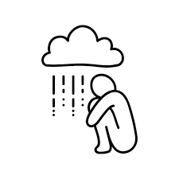

Depression
Symptoms
Causes
Treatment
Find Support
Top 10 Signs and Symptoms of Depression
Learn about common signs of depression.
Where to Find Support for Depression
Discover resources to help you cope with depression.
Do You Need Help? Find a Therapist
Get to Know Depression
All About Depression
Understand what depression is and its symptoms.

Is Depression a Disability?
Learn about depression as a mental health condition.
Treating Depression
VIEW ALL
Can Meditation Help with Depression?
Explore how meditation can be used to treat depression.
10 Tips to Overcome Depression
Practical advice for managing depression.